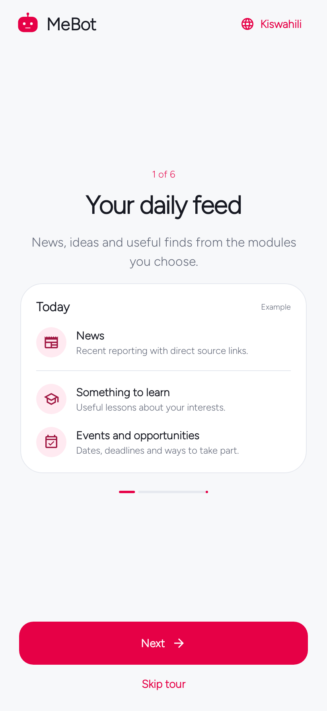

Start here
Install & first launch
Install the Android app, take a short welcome tour, and choose how much you want to configure now.
In the appDownload → Install → Open MeBot
On this page
Before you install
MeBot runs on Android 8.0 or later. Use the public APK linked from the download page. If publication is still pending, that page explains the available source-build route instead of offering an unverified file.
No AI account is required for alarms, Focus, daily check-in, saved local records, or the available public-source adapters. Connected AI enables most personalized discovery, story explanations, search, and conversations.
Already have MeBot?
Install a compatible signed update over the existing release. Do not uninstall as an update step: uninstalling can remove local app data. Export important data first if you need a separate copy.
Install the APK
- Download the APK to your Android phone from the official release page.
- Open the downloaded file. If Android asks, allow Install unknown apps for the browser or file manager you are using. The exact wording varies by phone.
- Confirm installation, then open MeBot. You may switch that installer permission off afterward.
- For an update, confirm that Android offers to update the existing release. A signing-key conflict or a lower version cannot be fixed by repeatedly trying the same file.
Release uses the package app.mynguli for upgrade compatibility. A developer debug build uses app.mynguli.debug and installs separately.
See installation troubleshooting if Android rejects the file.
The first launch
The six-step welcome tour introduces the feed, modules, context, AI, and local tools. Choose English or Kiswahili; you can change language later. You can skip the tour and configure the app from You.
- Connect AI when you are ready. Start with an eligible ChatGPT plan, or choose your own API key/service.
- Review personal context. A clean public build starts without anyone else’s identity or private preferences.
- Enable the modules you want. News is the initial feed module; add a few topics and refine them over time.


Give access when a feature needs it
MeBot asks for feature-specific access rather than requiring every phone permission at launch. Alarm setup links to exact timing, notifications, and lock-screen access. A QR alarm needs the camera; selecting your audio uses Android’s file picker. Weather uses a place you enter and does not request GPS.
For your first alarm, complete the phone setup and short locked-screen test. Android scheduling, volume, Do Not Disturb, and manufacturer battery settings affect actual ringing.
Written for MeBot 0.6.1. Native screen examples use synthetic host-test fixtures. See the verification record for what was tested and the remaining device/provider checks.